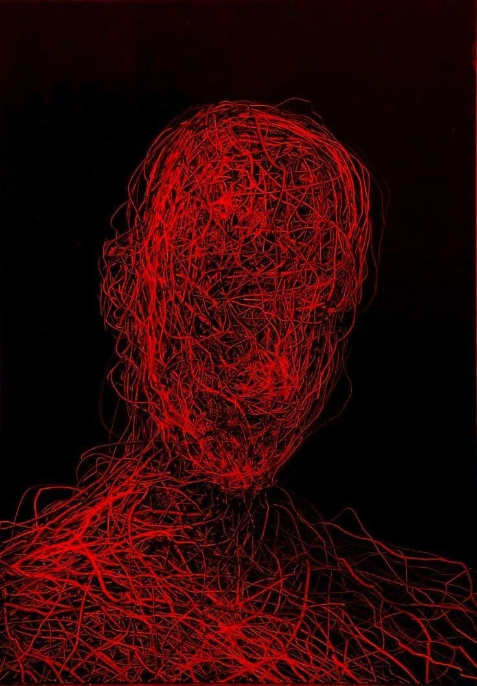

He became depressed and desperate to leave. Isai found out he was the last of the boys transferred from Nueva Esperanza. After knowing that, he reached a breaking point and attempted to harm himself with a pair of scissors. A supervisor saw him, took the scissors away, and called security. He then was taken to the casework, who was handling his case.
Days later, the moment he had been waiting for arrived!